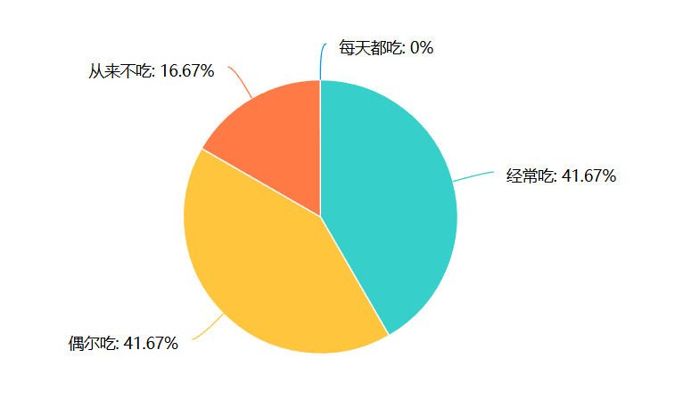
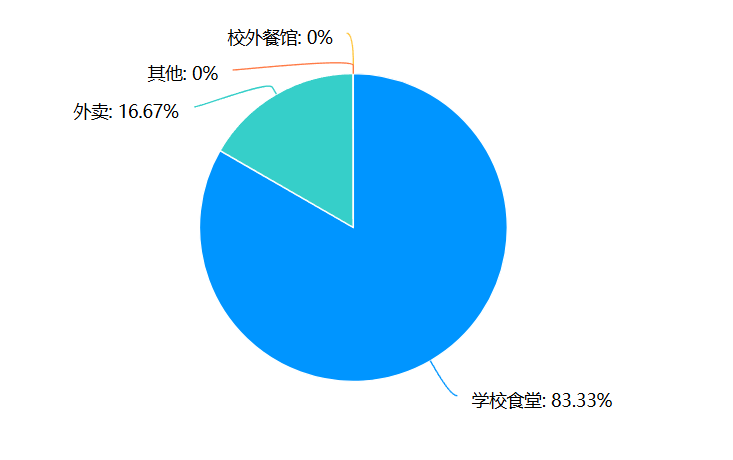
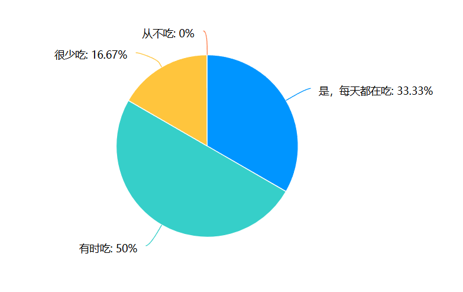
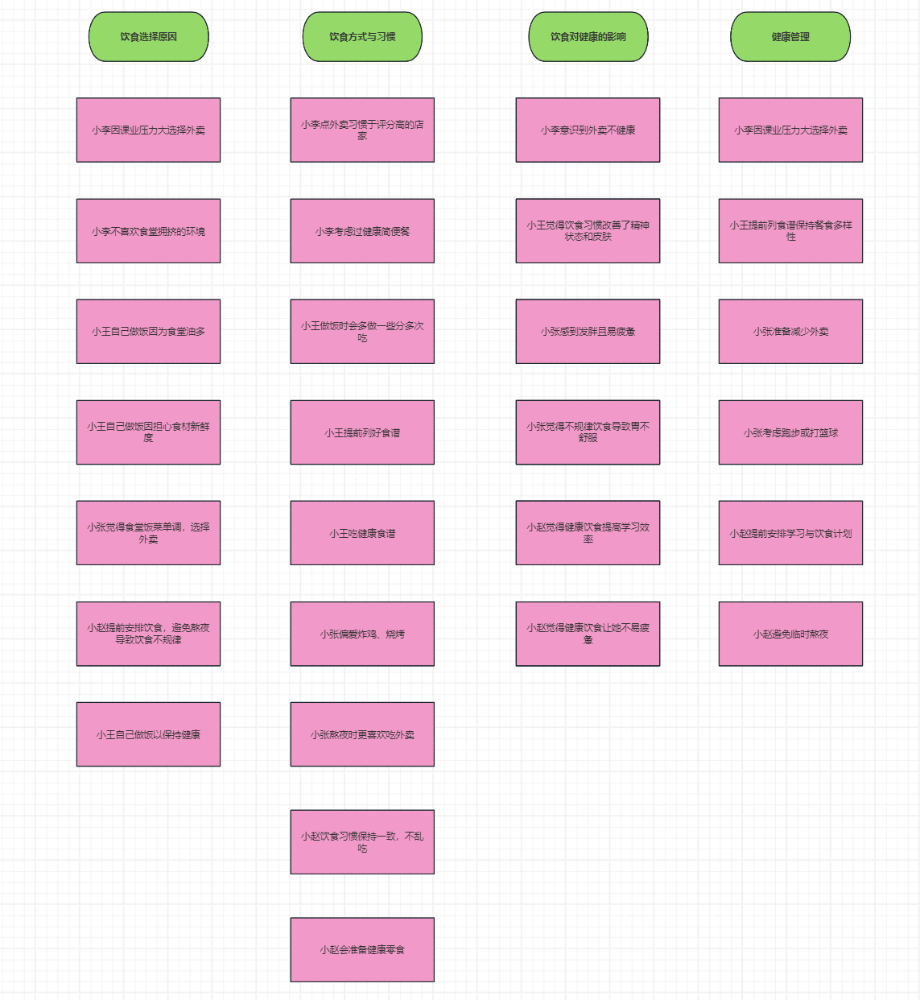

是否吃早餐的统计图：
根据数据分析，只有41.67%的同学表示他们经常吃早餐，表明早餐习惯较为普遍但仍需改善。大部分人没有吃早餐的习惯。
就餐地点的统计图：
根据数据表格，绝大多数受访者（83.33%）选择在学校食堂用餐，仅有少数（16.67%）选择外卖，校外餐馆和其他选项则没有人选择。 这表明学校食堂在用餐选择中占据了主导地位。说明同学们的饮食来源比较健康。
食用水果的统计图：
在参与调查的12人中，只有33.33%的人表示每天都摄入足够的水果和蔬菜， 而有50%的人表示有时吃，16.67%的人很少吃，且没有人表示从不吃。 这表明虽然大部分人偶尔会摄入水果和蔬菜，但仍有相当一部分人未能达到推荐的摄入量。
在本次分析中发现，喜欢点外卖的学生通常也存在一些不良的饮食习惯，例如较少摄入水果和蔬菜。 外卖的便利性往往意味着更高的油盐含量和较少的蔬菜搭配，这可能使他们的饮食更加单一、缺乏营养。结果表明，经常点外卖的同学会有不吃蔬菜水果， 重油重盐等坏习惯，而有良好生活习惯的人通常同时具有好几点生活习惯。
以下是亲和图绘制过程的记录照片：
以下是通过亲和图法收集并分类的访谈数据的数字版本。
通过对大学生饮食习惯的分析，可以看到他们在学业压力与健康管理之间的挣扎。许多学生因课业繁忙而选择方便的外卖，尽管他们意识到这些选择往往不健康。小李和小张代表了那些在高压情况下仍然选择高热量食物的群体。 另一方面，像小王和小赵这样的学生则采取了更为积极的健康管理措施，通过自制健康餐和提前计划来改善饮食习惯，最终获得了更好的身体状态和学习效率。这表明，在大学生活中，饮食选择不仅影响身体健康，也直接影响学习效果。 令人印象深刻的是，尽管大多数学生对饮食健康有所关注，但在实际选择中仍受环境和时间的制约。因此，如何帮助学生在忙碌的学习生活中做出更健康的饮食选择，依然是一个值得深入探讨的议题。